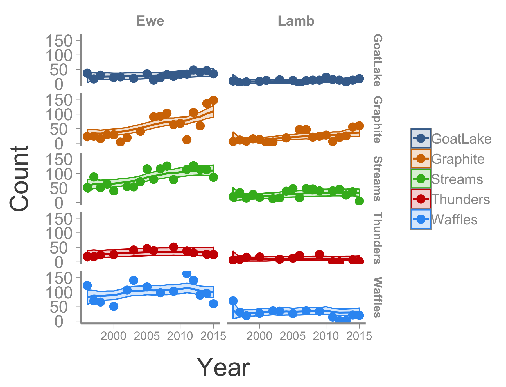

Advanced state-space models
Estimating vital rates from count data
WILD6900
2021-01-05
state_space2.RmdIn the last lab, we practiced fitting relatively simple state-space models to time series of count data. In this lab, we will expand on that model by fitting a state-space model to age-specific counts. As you will see, the additional information provided by knowing the age class of individuals in the population allows us to gain deeper insights into the drivers of population dynamics.
Objectives
Fit state-space models to age-specific count data
Use hierarchical models to partially pool data from spatially replicated counts
From population growth to vital rates
Imagine a population of individuals that can be visually placed into one of two age classes: juveniles and adults. For now. we will assume that this population is monitored annually just before adults start to breed. Thus, juveniles are individuals that have reached their first birthday and adults are individuals in their 2\(^{nd}\) breeding season and beyond. This scenario is reasonable for many species that have distinctive juvenile characteristics but cannot be visually aged once they reach two years of age.

Adult male American Restart (Setophaga ruticilla), aka the best warbler. Image courtesy of dobak, via Wikicommons

Juvenile male American Restart. See the difference?. Image courtesy of Andy Reago and Chrissy McClarren, via Wikicommons
Unlike the previous count data that we have seen, which included a single count of the total number of individuals in the population each year, counts that separate juveniles and adults allow us to think more mechanistically about changes in abundance. The key to the age-structured state-space model is that knowing the number of juveniles and adults in the population allows us to directly model changes in abundance as functions of vital rates (survival and reproduction). In particular, if we assume the population is closed to movement, we know that juveniles can only be added to the population via births and juvenile survival, i.e. recruitment1. At any given time \(t\), we therefore expect there to be \(N^{Ad}_{t-1} \times F_{t-1}\) juveniles in the population (where \(F_t\) is the per capita recruitment rate in year \(t\)). Of course, we also expect some process variance to occur and thus \(N^{Juv}_t \neq N^{Ad}_{t-1} \times F_{t-1}\). However, we can model this process variance by assuming the juvenile abundance arises from a Poisson distribution:
\[\large N^{Juv}_{t} \sim Poisson(N^{Ad}_{t - 1}F_{t-1}) \tag{1}\] Equation 1 should look familiar \(-\) this is the same model you used in homework 2 to estimate fecundity of the Peregrine falcon population in France. The only differences are that now:
we are estimating recruitment rather than fecundity (our interpretation of \(F\) changes slightly, though the way we estimate it remains the same); and
we are basing our estimates of \(F\) on the true population sizes (\(N^{Juv}\) and \(N^{Ad}\)) rather than counts.
However, we can link our counts to the true abundance using the state-space structure you have already learned:
\[\large y^{Juv}_t \sim normal(N^{Juv}_t, \tau_{obs}) \tag{2}\]
How many adults are in the population in each year? Again, because we are assuming no movement into or out of the population, adults can be added to the population only by juveniles surviving to age 2. Adults can only leave the population by dying.
We will further assume that once they have reached age 1, juveniles survive at the same rate as adults. Therefore, the expected number of adults in the population at time \(t\) is equal to the total number of individuals in the population at time \(t-1\) (i.e., \(N_{t-1} = N^{Juv}_{t-1} + N^{Ad}_{t-1}\)) times the probability that those individuals survive the year. We will denote survival probability as \(\phi_t\). Again, there will be some process variance in the number of surviving individuals, which can model using a binomial distribution:
\[\large N^{Ad}_t \sim binomial(N_{t-1} , \phi_t) \tag{3}\]
We again link the true adult abundance to our counts of adults using the now familiar state-space structure:
\[\large y^{Ad}_t \sim normal(N^{Ad}_t, \tau_{obs}) \tag{4}\]
Note here that we are assuming the observation error is the same for adults and juveniles. Whether this is a reasonable assumption will depend on the specifics of the study organisms but this assumption could be relaxed by modeling age-specific observation errors (e.g., \(\tau^{Juv}_{obs}\) and \(\tau^{Ad}_{obs}\)).
The really cool advance of the age-structured state-space model is that with just the four equations outlined above, we have derived mechanistic models that explain variation in abundance via the underlying vital rates and link our imperfect counts to the true abundances! For additional background the concepts that underlie this model, see the original paper describing open population count models by Dail and Madsen as well a more recent paper by Zipkin et al. describing an age-structured model similar to the one described above.
Estimating recruitment and survival of Bighorn sheep
To see how this model works, we will use a data set of Bighorn sheep (Ovis canadensis) counts generously provided by Wildland Resources graduate student Kylie Sinclair and her adviser Kezia Manlove. Counts of adults females (ewes) and juveniles (lambs) from 5 herds were performed (almost) annually from 1996 to 2015. There are some gaps in the counts in certain years but as we learned in the last exercise, missing counts are not a huge problem in state-space models as long as they are relatively rare.

Big horn sheep photo courtesy of Bureau of Land Management, via Wikicommons
Data
The ewe and lamb counts can be loaded directly into R using the following code (note that if you get an error message, you may need to install an updated version of the WILD6900 package):
| Year | Waffles | Thunders | Streams | GoatLake | Graphite |
|---|---|---|---|---|---|
| 1996 | 123 | 19 | 52 | 37 | 23 |
| 1997 | 70 | 18 | 88 | 17 | 24 |
| 1998 | 66 | 24 | 51 | 30 | 16 |
| 1999 | NA | NA | 63 | NA | 30 |
| 2000 | 51 | 25 | 40 | 22 | 29 |
| 2001 | NA | NA | NA | 24 | 4 |
Priors
We will model the dynamics of these herds using the model described by equations 1-4 above. However, in our example we have an added layer of complexity due to jointly modeling the dynamics of different populations. That means we could, in theory, model recruitment and survival as constant across years and herds (we’ll call this the \(F(.), \phi(.)\) model), as varying across both years and herds (\(F(t, herd), \phi(t, herd)\)), or anything in between (e.g., \(F(t), \phi(t)\), \(F(herd), \phi(herd)\), \(F(.), \phi(herd)\), etc.). Decisions about how to model variation in population parameters is not easy and will often come down to domain expertise (how much variation do we think exists among herds?), statistical limitations (estimating parameters that vary by both herd and year will require a lot of data, which we may not have). More often, you might fit multiple models and then use some type of model selection to determine which model is best supported by your data. Bayesian model selection is a complex and evolving topic and one that we will not get into here. Instead, we will start by fitting the most simple model (\(F(.), \phi(.)\)) and then adding complexity.
To implement the \(F(.), \phi(.)\) model in JAGS, we first need to define priors for all of the parameters in the model. These parameters include:
\(\large F\)
\(\large \phi\)
\(\large \sigma_{obs}\)
What priors do you think are most appropriate for these parameters? Once you have decided, using the following code to start a JAGS models with these priors2:
sink("jags/sheep_ssm.jags")
cat("
model{
## Priors
## Likelihood
## Derived parameters
}
", fill = TRUE)
sink()As in the previous state-space models, we also need priors for the initial populations sizes for each herd. Here, though, we need to be careful. Our previous models assumed, somewhat simplistically, that abundance \(N\) could be any real number. This was a result of assuming normal process variance. In the age-structured model, however, we are assuming that juvenile abundance arises from a Poisson distribution and the adult abundance arises from a binomial. What do these distributions have in common? They are both discrete probability distributions. This means we need to ensure that our priors for initial abundances generate integer values. We will do this in a two step process. First we define a uniform prior for the expected abundance in year 1 for each herd \(i\):
\[\large \mu^{lamb}_{i} \sim uniform(0, 300)\]
\[\large \mu^{ewe}_{i} \sim uniform(0, 300)\]
Next, we define Poisson priors for the abundances:
\[\large N^{lamb}_{1,i} \sim Poisson(\mu^{lamb}_{i})\]
\[\large N^{ewe}_{1,i} \sim Poisson(\mu^{ewe}_{i})\]
Using the equations above, add the initial abundance priors to the JAGS model. Remember that you will need to use a for loop to define initial abundance priors for each herd.
Likelihood
With the priors written, we are now ready to write the likelihoods. Both counts and abundances are indexed by year \(t\) and herd \(i\) so the likelihood will need a set of nested for loops. Because the likelihood for the state process will need to loop over years 2:nYears but the observation model will loop over 1:nYears it will be easier to make the outer loop correspond to herd \(i\) and then have two inner \(t\) loops.
Within the likelihood for the state model, the number of ewes needs to be predicted from the total number of sheep in the previous year. You can do this by either defining a new variable N.tot[t,i] and then including that in the binomial likelihood or by including N.ewe[t,i] + N.lamb[t,i] directly in the likelihood. The later results in more compact code but the former allows you to monitor N.tot as another variable in the model.
The likelihood for the observation model will be exactly like the likelihoods for our previous state-space models, but with separate models for the lamb and ewe counts.
Add the full likelihood statement to the JAGS model you started above.
Derived parameters: Estimating \(\Large \lambda\)
A common objective of monitoring studies is estimating the average population growth rate (\(\lambda\)) across the study period to determine whether there is a long-term trend in population size. One of the benefits of Bayesian models that we have learned about but not really implemented is the ability to estimate derived variables (and associated uncertainty). Let’s use our estimates of \(N\) to derive an estimate of the long-term population growth rate for each herd.
For a time series of abundances, the average growth rate can be estimated as:
\[\large \lambda = \bigg[\frac{N_T}{N_0}\bigg]^{\frac{1}{T}}\]
where \(T\) is the number of years and \(N_0\) is the initial abundance. We can estimate the posterior distribution of \(\lambda\) for each herd by simply converting the above equation into working JAGS code:
lambda <- (N.tot[nYears,]/N.tot[1,])^(1/nYears)which will return a vector of length 5.
Running the model
Finally we’re ready to prepare the data and initial values and fit the model, steps which are hopefully becoming familiar. On your own, complete the following code:
# Bundle data
jags.data <-
# Initial values
inits <- function(){}
# Parameters monitored
parameters <-
# MCMC settings
ni <-
nt <-
nb <-
nc <-
# Call JAGS from R
sheep_mod <- jagsUI::jags(jags.data, inits,
parameters, "jags/sheep_ssm.jags",
n.chains = nc, n.thin = nt, n.iter = ni,
n.burnin = nb, parallel = TRUE)Now check the model for convergence.
Can can also visualize the observed and estimated counts:
## Create data frame with observed and estimated counts
sheep_df <- data.frame(Year = rep(ewe_counts$Year, 10),
Age = rep(c("Ewe", "Lamb"), each = length(as.matrix(ewe_counts[,-1]))),
Herd = rep(names(ewe_counts[,-1]), each = nrow(ewe_counts)),
Count = c(c(as.matrix(ewe_counts[,-1])), c(as.matrix(lamb_counts[,-1]))),
N = c(c(sheep$mean$N.ewe), c(sheep$mean$N.lamb)),
LCI = c(c(sheep$q2.5$N.ewe), c(sheep$q2.5$N.lamb)),
UCI = c(c(sheep$q97.5$N.ewe), c(sheep$q97.5$N.lamb)))
## Plot herd-specific counts
ggplot(sheep_df, aes(x = Year, y = Count, group = Herd, color = Herd, fill = Herd)) +
geom_line(aes(x = Year, y = N)) +
geom_ribbon(aes(x = Year, ymin = LCI, ymax = UCI), alpha = 0.2) +
geom_point() +
facet_grid(Herd~Age) +
theme(strip.text.x = element_text(size = 12),
strip.text.y = element_text(size = 12),
axis.text.x = element_text(size = 10))
Adding complexity
Constant recruitment and survival among herds and across years may not be a reasonable assumption. However, as sophisticated Bayesian modelers, you now have the tools to relax that assumption in an almost endless number of ways.
On your own, modify the model code (and any of the associated setup code) to treat recruitment and survival as random effect that vary across both herd and year. In other words,
\[\large F_{t, i} \sim normal(?, ?)\]
\[\large \phi_{t, i} \sim normal(?, ?)\]
What are the hyper parameters necessary to fit this model? Change the prior statements in your code and then run the model. Do the estimated abundances change? Does this model make more biological sense?
Historically, per capita fecundity (i.e., the average number of offspring produced per female) is denoted \(m\) and the survival of those offspring is denoted \(S_0\). Recruitment, which is the average number of juveniles in the population per female is thus \(m \times S_0 = F\)↩︎
State-space models often need some type of weakly informative priors to estimate parameters (we’re asking a lot out of count data after all) and this one is no different. Trial and error indicated that the prior for \(\sigma_{obs}\) needs to be somewhat restrictive in order for the model to converge. In test cases of the this model, \(uniform(0,25)\) performed relatively well by ensuring that the model can’t sample unrealistically large values for this parameter while also not appearing to artificially truncate the posterior distribution.↩︎